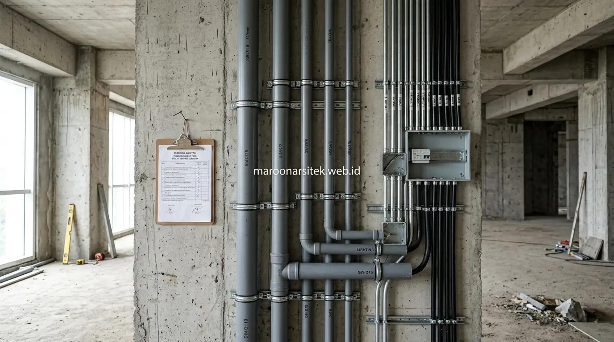

Biaya bangun rumah per m2 di Jakarta tidak hanya ditentukan oleh spesifikasi material struktur dan finishing, tetapi juga dipengaruhi faktor lokasi lahan, tingkat kompleksitas desain, dan kebutuhan instalasi mekanikal elektrikal serta sanitasi yang berbeda pada setiap proyek. Maroon Arsitek membantu pemilik lahan memahami faktor-faktor tersebut sebagai dasar penyusunan RAB yang lebih akurat melalui layanan jasa kontraktor rumah Jakarta kami.
Banyak estimasi biaya yang beredar hanya berdasarkan luas bangunan tanpa mempertimbangkan faktor lokasi dan kompleksitas desain, sehingga sering kali tidak mencerminkan kondisi proyek yang sebenarnya. Bagian berikut menguraikan tiga faktor tambahan yang turut memengaruhi besaran biaya bangun rumah per m2 di Jakarta.
Faktor Lokasi dan Aksesibilitas Lahan terhadap Biaya
Lokasi dan aksesibilitas lahan memengaruhi biaya konstruksi melalui komponen mobilisasi material dan alat berat, di mana lahan dengan akses jalan sempit atau berada di kawasan padat cenderung membutuhkan biaya mobilisasi lebih tinggi dibanding lahan dengan akses yang mudah dijangkau. Faktor ini sering terabaikan dalam estimasi biaya kasar yang hanya berbasis luas bangunan.
Lahan dengan akses terbatas mungkin memerlukan metode kerja khusus, seperti pengangkutan material secara manual pada jarak tertentu, yang menambah waktu dan biaya tenaga kerja dibanding proyek dengan akses kendaraan langsung ke lokasi pembangunan.
Kondisi lingkungan sekitar lahan, seperti kepadatan bangunan tetangga, turut memengaruhi metode konstruksi yang dapat diterapkan, terutama terkait ruang gerak alat berat dan penempatan material selama proses pembangunan berlangsung.
Metode Kerja Khusus untuk Lahan dengan Akses Terbatas
Kebutuhan penyesuaian metode kerja pada lahan sulit akses dijawab melalui perencanaan logistik khusus, seperti penjadwalan pengiriman material dalam volume lebih kecil namun lebih sering, untuk mengatasi keterbatasan akses menuju lokasi proyek.
Penyesuaian metode ini perlu diperhitungkan sejak awal dalam RAB, karena biaya tenaga kerja tambahan akibat metode khusus dapat memengaruhi total anggaran meski spesifikasi material yang digunakan tetap sama.
Kompleksitas Desain sebagai Faktor Pengali Biaya Konstruksi
Tingkat kompleksitas desain, seperti jumlah sudut bangunan, bentuk atap tidak standar, atau elemen arsitektural khusus, berfungsi sebagai faktor pengali yang meningkatkan biaya konstruksi dibanding desain dengan bentuk sederhana pada luas bangunan yang sama. Faktor ini menjelaskan mengapa dua rumah dengan luas serupa dapat memiliki biaya yang berbeda signifikan.
Desain dengan banyak sudut atau bentuk tidak beraturan membutuhkan lebih banyak sambungan material dan waktu pengerjaan dibanding desain dengan bentuk geometris sederhana, yang secara langsung berdampak pada biaya tenaga kerja dan material yang dibutuhkan.
Elemen arsitektural khusus, seperti void besar atau bukaan non-standar, juga memerlukan perhitungan struktural tambahan yang meningkatkan kompleksitas dan biaya perencanaan sebelum memasuki tahap konstruksi fisik di lapangan.

Perbandingan Biaya antara Desain Sederhana dan Kompleks
Kebutuhan pemahaman atas variasi biaya antar desain dijawab melalui perbandingan tingkat kompleksitas, di mana desain dengan bentuk kompak dan minim sudut cenderung lebih efisien secara biaya dibanding desain dengan banyak detail arsitektural khusus.
Perbandingan ini membantu pemilik lahan mempertimbangkan trade-off antara preferensi estetika dan efisiensi anggaran, sebelum menentukan tingkat kompleksitas desain yang akan direalisasikan pada proyek pembangunan rumah.
Alokasi Anggaran untuk Instalasi Mekanikal Elektrikal dan Sanitasi
Instalasi mekanikal elektrikal dan sanitasi membutuhkan alokasi anggaran tersendiri yang besarannya dipengaruhi jumlah titik instalasi, kapasitas daya yang dibutuhkan, dan spesifikasi perangkat sanitasi yang dipilih untuk setiap ruangan dalam rumah. Komponen ini sering kali kurang diperhitungkan dalam estimasi biaya kasar yang hanya fokus pada struktur dan finishing.
Jumlah titik instalasi listrik dan air yang lebih banyak, seperti pada rumah dengan banyak ruangan atau lantai bertingkat, secara langsung menambah kebutuhan material kabel, pipa, dan komponen pendukung lainnya dibanding rumah dengan tata ruang lebih sederhana bersama tim kontraktor rumah kami.
Pemilihan spesifikasi perangkat sanitasi, mulai dari kelas standar hingga premium, turut memengaruhi besaran anggaran pada komponen ini, memberikan fleksibilitas bagi pemilik rumah untuk menyesuaikan dengan prioritas anggaran yang dimiliki.
Perhitungan Titik Instalasi Berdasarkan Jumlah Ruangan
Kebutuhan estimasi yang akurat pada komponen MEP dijawab melalui perhitungan jumlah titik instalasi berdasarkan jumlah dan fungsi ruangan, memastikan setiap area mendapat kapasitas listrik dan sanitasi yang memadai sesuai kebutuhan penggunaannya.
Perhitungan ini penting dilakukan sejak tahap perencanaan, agar anggaran untuk komponen MEP tidak terlewat dalam RAB awal dan menyebabkan kekurangan dana saat instalasi harus dilakukan pada tahap akhir konstruksi.